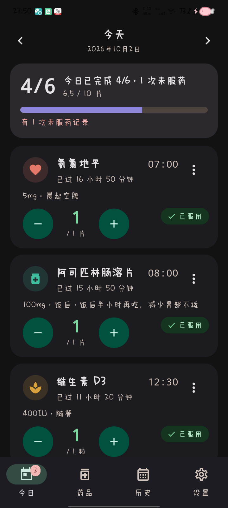
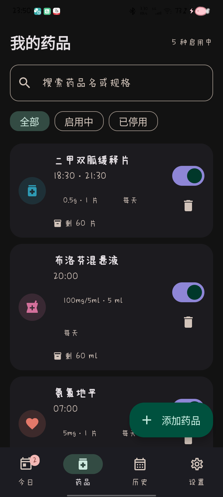
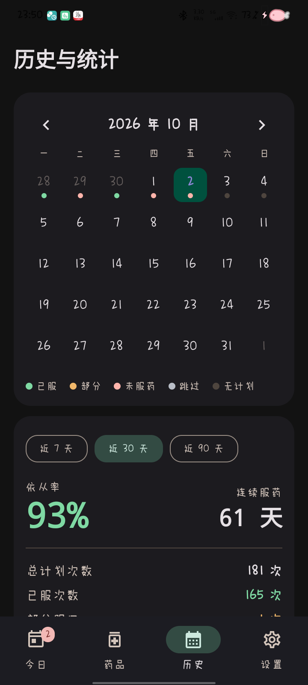
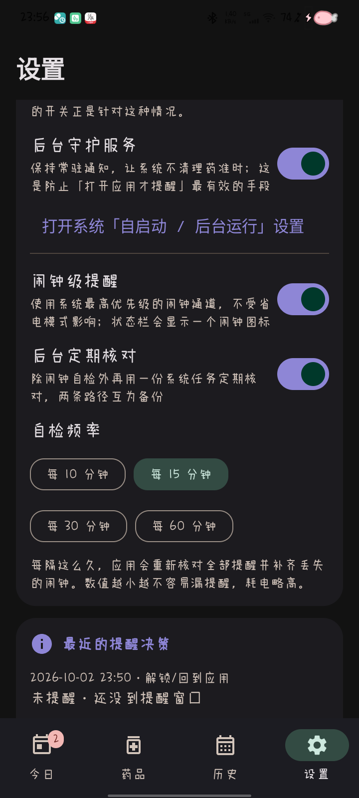
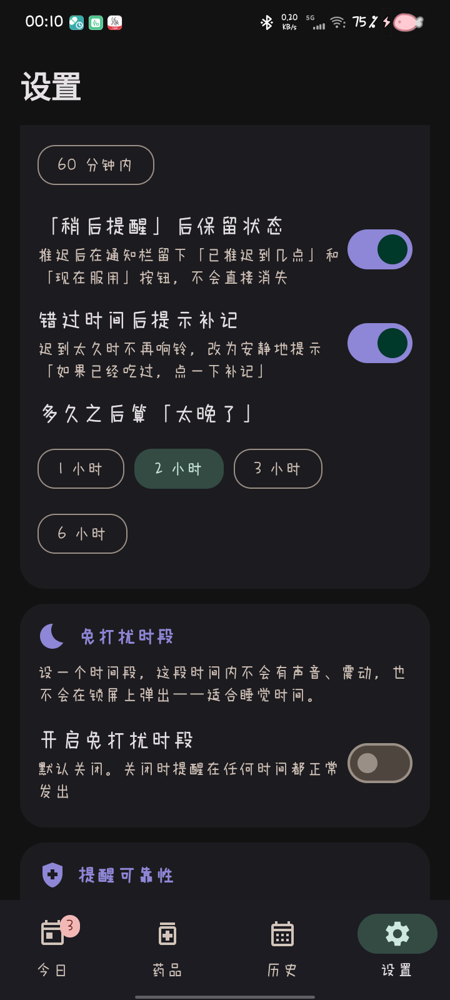

到点提醒；
没看见，就再提醒一次。
药准时是一款离线优先的用药提醒与记录应用。提醒落在锁屏、手机装在口袋里的时候，只要你解锁手机，它会把「已经过了时间、还没记录」的药再告诉你一次。

为「没人看见的那一次」而设计
大多数提醒失败不是因为没响，而是因为响的时候没人看见：手机在锁屏、在口袋里、在另一个房间。等到你拿起手机，那条通知已经过期了。药准时针对这件事有三层处理。
每个服药时间由系统精确闹钟唤醒，可选「闹钟级提醒」——Android 唯一不受省电模式影响的闹钟类型，代价是状态栏出现一个闹钟图标，所以交给用户决定。
只要你解锁手机（或重新打开药准时），应用立刻检查所有「已过时间、还没记录」的药——包括已经被判为未服药的——合并成一条提醒告诉你。次数从第一次解锁提醒开始算，可设 1–10 次，两次之间可设最小间隔；点了「稍后」的药在到点前不会打扰你。
设一个时间段，这段时间内不会有声音、震动，也不会在锁屏上弹出。到点的药不会被丢掉：默认等时段结束再提醒你一次。也可以选择「只在通知栏静默显示一条」。解锁补提醒在时段内同样只留静默通知，并且不消耗提醒次数。
后台守护服务让系统不把应用当成可回收的后台进程；每 15 分钟一次的心跳会从数据库重新推导并重排全部提醒，因此任何一个闹钟被系统丢掉，最多只延误一个周期，而不是永远消失。
它知道自己做过什么
每一次提醒的决策都会记录下来：是哪个触发原因、投递还是跳过、跳过是因为什么、系统实际延迟了多少毫秒。设置页的「最近的提醒决策」可以直接回答「为什么 8 点没有提醒我」。
它也知道自己是否被限制
自检面板会核对通知权限、精确闹钟、电池优化白名单、后台守护是否在运行，并把「已排定的闹钟没有被系统触发」这种证据直接摆出来——这是分辨「应用没排」和「系统没给」的唯一办法。
四个页面，够用就好
今日、药品、历史与统计、设置。所有数字与时间使用等宽字体，避免读数跳动；每个状态都有独立的图标与文字，不只靠颜色区分。




该有的都有，不该有的都没有
没有云同步、没有账号、没有网络请求。所有数据只写在本机的数据库里，备份是你可以自己拿走的 JSON 文件。
多个服药时间
一个药品可挂任意多个提醒时间，每个时间独立设置重复规则：每天 / 隔天 / 每周指定 / 每 N 天 / 吃 X 天停 Y 天 / 每月几号。
数量与库存
加号减号步进记录，液体支持 0.5 步长；状态由数量推导（已服 / 部分 / 未服），库存自动扣减并在不足时提醒。
桌面小组件
单一可缩放条目，按「即将服用 > 未服药 > 今日稍后 > 已服用」排序，刷新间隔 10 秒到 10 分钟可选。
适老与无障碍
可选大字体（总字号封顶 1.6×，布局自动换行而不是压缩）、高对比模式、简化模式、更大的触控目标，以及一键适老预设。
备份与导出
JSON 全量备份与恢复、CSV 记录导出（方便交给医生）。文件在你自己手里，不经任何服务器。
主题
Material 3、动态取色、浅色 / 深色 / 跟随系统，三套主题色。数字与时间始终使用等宽字体。
它连网络的权限都没有
应用的清单里没有 INTERNET 权限。这不是一句承诺，而是可以在安装包里核对的事实：没有网络权限，就不可能上传任何东西。
本应用只做用药记录与提醒，不提供任何诊断、治疗或用药建议。请严格遵照医生或药师的处方服药。
提醒功能依赖系统闹钟与通知服务，在省电模式、后台限制或权限被收回等情况下可能延迟或失效，请勿把它当作唯一的用药保障手段。
1.6.0
新增免打扰时段；上一版的重点是「没人看见的那一次提醒」，以及在真机上发现的几个缺陷。
新增
- 免打扰时段：一个时间段内不会有声音、震动，也不会在锁屏上弹出；到点的提醒默认顺延到时段结束后再发，也可以改为只在通知栏静默显示。时段内解锁补提醒同样静默，且不消耗提醒次数。
- 解锁补提醒：解锁或回到应用时，立刻检查所有已超时且未记录的剂量（含已判未服药、只吃了一半），合并成一条提醒。
- 提醒次数与间隔：每个药 1–10 次，从第一次解锁提醒开始算；两次之间可设最小间隔；免打扰时段只留静默通知且不消耗次数。
- 全屏提醒（可选，默认关）：像系统闹钟一样点亮屏幕，Android 14+ 未授权时自动退化为横幅。
- 字体自适应：总字号封顶 1.6×，所有选项按钮自动换行，正文不再被裁切。
修复
- 已判定未服药的剂量会被整条管线无视：过期查询排除了该状态，导致跨午夜、或已写过标记的剂量连静默通知都没有。
- 无限重算风暴：重算 → 请求守护服务 → 服务重算 形成闭环，真机上 86 秒写入 491 条记录、每秒重排全部闹钟约 25 次。
- 已到点仍显示「未到时间」：剂量行在时间到之前物化后状态不再更新，「未服药」红标因此形同虚设。
- 卡片「已过 N 分钟」错位与断行：中文可在任意两字间断行，单位词会被从中间撕开。
- 导入失败会清空数据库：校验发生在清表之后，一个没有药品的备份会先清空再报错。现在校验与清表顺序已修正。
- 免打扰时段曾被「顺延」开关反转为响铃：关闭顺延时会被读成「不在免打扰」，于是凌晨照响。现在「是否静默」与「是否顺延」是两个独立的判断。
历史版本见 GitHub Releases。
装到你的手机上
当前安装包使用 Android 通用调试签名，因此可以覆盖安装并保留数据；调试签名是公开的，请把它当作自用与测试的分发方式。数据保存在本机，升级不会清空记录。